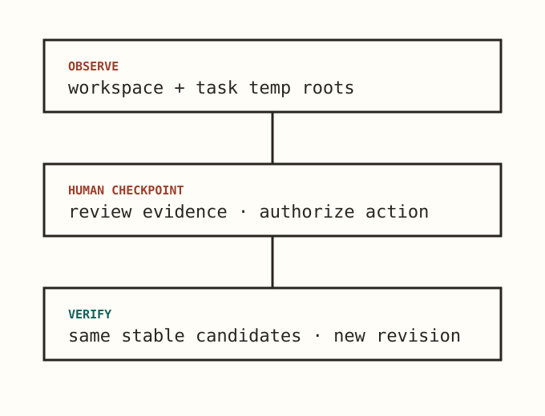

Local and offline
No network access, telemetry, upload path, or remote service.
Task-scoped residue evidence
ARE shows the files, directories, processes, and listening ports that appeared inside one Agent task—before anyone decides what should be cleaned.

The checkpoint
Declare the exact workspace and task-owned temporary roots before tests or builds.
Receive grouped, path-aliased evidence without a machine-wide scan.
The user authorizes cleanup; the Agent uses its ordinary host tools.
ARE rechecks the same stable candidates and records a new revision.
Narrow by design
No network access, telemetry, upload path, or remote service.
ARE cannot delete files, terminate processes, close ports, or decide that a candidate is safe.
Opaque owner capabilities isolate evidence. Public IDs never authorize report access.
NO_CANDIDATES_OBSERVED is scoped to declared roots. It is never a host-wide cleanliness claim.
Agent workflow
Install the verified MCPB or native package. Compatible Agents receive the same eight-tool, evidence-only contract.
begin_task_observation
↓ run tests or builds
end_task_observation
↓ explain candidates and ask
user authorizes cleanup
↓ Agent cleans with host tools
verify_task_residueTrust boundary
ARE complements sandboxing, test isolation, build provenance, and host policy. It answers a narrower question: what task-scoped residue did this observation actually see?